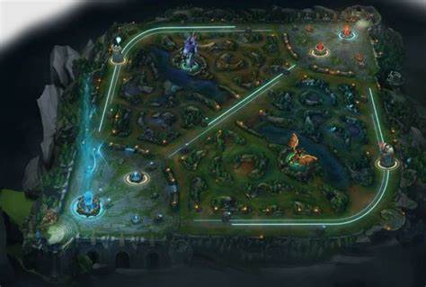

Pagina oficial de League of Legends
Línea Superior (Top Lane): Ubicación: Parte superior del mapa. Campeones típicos: Tanques, luchadores o campeones que escalan bien en el juego tardío. Objetivo: Controlar la línea y farmear (recoger oro de los súbditos). Los campeones en esta línea suelen tener peleas uno a uno y son responsables de resistir la presión de los enemigos.
Línea del Medio (Mid Lane): Ubicación: En el centro del mapa. Campeones típicos: Magos, asesinos, y campeones de alto daño. Objetivo: Controlar el mapa con desplazamientos rápidos, influir en las otras líneas con emboscadas (roams) y generar daño en peleas de equipo. Los campeones de esta línea suelen ser más móviles y flexibles.
Línea Inferior (Bot Lane): Ubicación: Parte inferior del mapa. Campeones típicos: Tiradores (ADC) y soportes (Support). Objetivo: El ADC (tirador) se centra en farmear y generar daño en las peleas de equipo, mientras que el soporte ayuda a protegerlo, controlar la visión del mapa y proporcionar utilidad. Esta línea suele ser crucial en el juego tardío debido al poder de los ADC.
